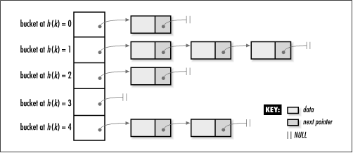
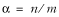
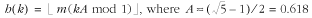

8.1 Description of Chained Hash
Tables
A chained hash table fundamentally consists
of an array of linked lists. Each
list forms a bucket in which we place all elements hashing
to a specific position in the array (see Figure
8.1). To insert an element, we first pass its key to a
hash function in a process called hashing the key. This tells us in which bucket the
element belongs. We then insert the element at the head of the
appropriate list. To look up or remove an element, we hash its
key again to find its bucket, then traverse the appropriate
list until we find the element we are looking for. Because
each bucket is a linked list, a chained hash table is not
limited to a fixed number of elements. However, performance
degrades if the table becomes too full.

8.1.1 Collision Resolution
When two keys hash to the same position in a
hash table, they collide. Chained hash tables have a simple
solution for resolving collisions: elements are simply placed
in the bucket where the collision occurs. One problem with
this, however, is that if an excessive number of collisions
occur at a specific position, a bucket becomes longer and
longer. Thus, accessing its elements takes more and more
time.
Ideally, we would like all buckets to grow at
the same rate so that they remain nearly the same size and as
small as possible. In other words, the goal is to distribute
elements about the table in as uniform and random a manner as
possible. This theoretically perfect situation is known as
uniform hashing; however, in practice it usually can only
be approximated.
Even assuming uniform hashing, performance
degrades significantly if we make the number of buckets in the
table small relative to the number of elements we plan to
insert. In this situation, all of the buckets become longer
and longer. Thus, it is important to pay close attention to a
hash table's load factor. The load factor of a hash table is
defined as:

where n
is the number of elements in the table and m is the number of positions into
which elements may be hashed. The load factor of a chained
hash table indicates the maximum number of elements we can
expect to encounter in a
bucket, assuming uniform hashing.
For example, in a chained hash table with
m = 1699 buckets and a total of
n = 3198 elements, the load
factor of the table is a = 3198/1699
= 2. Therefore, in this case, we can expect to encounter no
more than two elements while searching any one bucket. When
the load factor of a table drops below 1, each position will
probably contain no more than one element. Of course, since
uniform hashing is only approximated, in actuality we end up
encountering somewhat more or less than what the load factor
suggests. How close we come to uniform hashing ultimately
depends on how well we select our hash function.
8.1.2 Selecting a Hash
Function
The goal of a good hash function is to
approximate uniform hashing, that is, to spread elements about
a hash table in as uniform and random a manner as possible. A
hash function h is a function
we define to map a key k to
some position x in a hash
table. x is called the hash coding of k. Formally stated:
h(k) = x
Generally, most hashing methods assume k to be an integer so that it may be
easily altered mathematically to make h distribute elements throughout the
table more uniformly. When k is
not an integer, we can usually coerce it into one without much
difficulty.
Precisely how to coerce a set of keys depends
a great deal on the characteristics of the keys themselves.
Therefore, it is important to gain as much of a qualitative
understanding of them in a particular application as we can.
For example, if we were to hash the identifiers found in a
program, we might observe that many have similar prefixes and
suffixes since developers tend to gravitate toward variables
such as sampleptr, simpleptr,
and sentryptr. A poor way to coerce these keys
would be any method depending strictly on characters at the
beginning and end of the keys, since this would result in many
of the same integers for k. On
the other hand, we might try selecting characters from four
positions that have the propensity to be somewhat random,
permute them in a way that randomizes them further, and stuff
them into specific bytes of a four-byte integer. Whatever
approach we choose for coercing keys, the most important thing
to remember, again, is that a hash function should distribute
a set of keys about a hash table in a uniform and random
manner.
8.1.2.1 Division method
Once we have a key k represented as an integer, one of
the simplest hashing methods is to map it into one of m positions in a table by taking the
remainder of k divided by m. This is called the division method. Formally stated:
h(k) = k mod m
Using this method, if the table has m = 1699 positions, and we hash the
key k = 25,657, the hash coding
is 25,657 mod 1699 = 172. Typically, we should avoid values
for m that are powers of 2.
This is because if m = 2
p, h becomes just
the p lowest-order bits of
k. Usually we choose m to be a prime number not too close
to a power of 2, while considering storage constraints and
load factor.
For example, if we expect to insert around
n = 4500 elements into a
chained hash table, we might choose m = 1699, a good prime number between
210 and 211. This results in a load
factor of a = 4500/1699  2.6, which indicates that
generally two or three elements will reside in each bucket,
assuming uniform hashing. 2.6, which indicates that
generally two or three elements will reside in each bucket,
assuming uniform hashing.
8.1.2.2 Multiplication method
An alternative to
the division method is to multiply the integer key k by a constant A in the range < A < 1; extract the fractional
part; multiply this value by the number of positions in the
table, m; and take the floor of
the result. Typically, A is
chosen to be 0.618, which is the square root of 5, minus 1,
all divided by 2. This method is called the multiplication method. Formally stated:

An advantage to this method is that m, the number of positions in the
table, is not as critical as in the division method. For
example, if the table contains m = 2000 positions, and we hash the
key k = 6341, the hash coding
is (2000)((6341)(0.618) mod 1) = (2000)(3918.738 mod 1) =
(2000)(0.738) = 1476.
In a chained hash table, if we expect to
insert no more than n = 4500
elements, we might let m =
2250. This results in a load factor of a = 4500/2250 = 2, which indicates that no
more than two traversals should be required to locate an
element in any bucket, assuming uniform hashing. Again, notice
how this method of hashing allows more flexibility in choosing
m to suit the maximum number of
traversals acceptable to us.
Example
8.1 presents a hash function that performs particularly
well for strings. It coerces a key into a permuted integer
through a series of bit operations. The resulting integer is
mapped using the division method. The function was adapted
from Compilers: Principles,
Techniques, and Tools (Reading, MA: Addison-Wesley,
1986), by Alfred V. Aho, Ravi Sethi, and Jeffrey D. Ullman,
who attributed it to P. J. Weinberger as a hash function that
performed well in hashing strings for his
compiler.
Example 8.1.
A Hash Function That Performs Well for Strings /*****************************************************************************
* *
* ------------------------------- hashpjw.c ------------------------------ *
* *
*****************************************************************************/
#include "hashpjw.h"
/*****************************************************************************
* *
* -------------------------------- hashpjw ------------------------------- *
* *
*****************************************************************************/
int hashpjw(const void *key) {
const char *ptr;
int val;
/*****************************************************************************
* *
* Hash the key by performing a number of bit operations on it. *
* *
*****************************************************************************/
val = 0;
ptr = key;
while (*ptr != '\0') {
int tmp;
val = (val << 4) + (*ptr);
if (tmp = (val & 0xf0000000)) {
val = val ^ (tmp >> 24);
val = val ^ tmp;
}
ptr++;
}
/*****************************************************************************
* *
* In practice, replace PRIME_TBLSIZ with the actual table size. *
* *
*****************************************************************************/
return val % PRIME_TBLSIZ
;
}
|